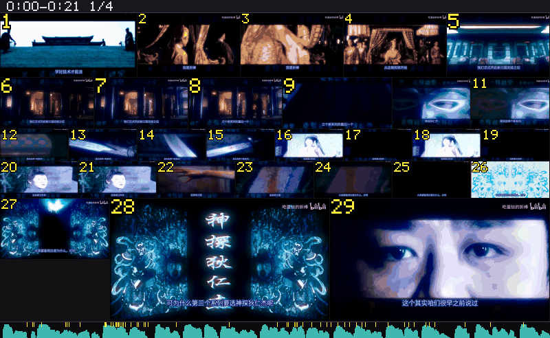
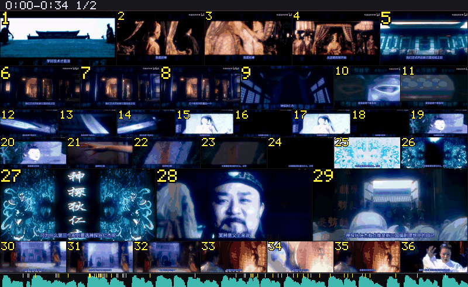
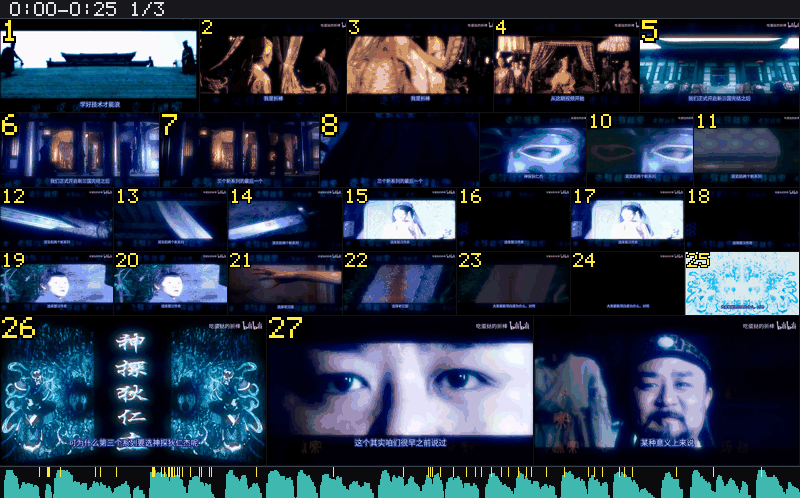
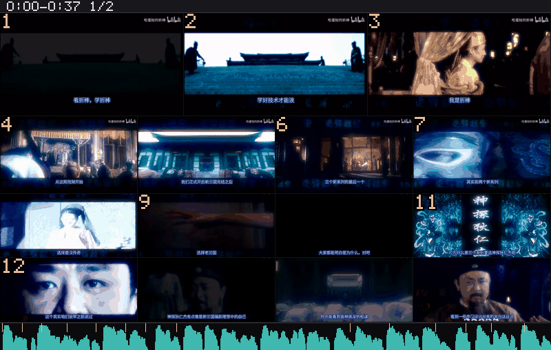

分镜
Coopanion / Cortico 的 World：把视频变成可引用的分镜宫格图，附一份带时间码的清单。
本页所有截图与数字都是在本机真跑出来的（Windows 11 · Coopanion 0.2.17 · 同一支 B 站视频 0–60s）。
安装（从本机目录）
先完全退出 Coopanion，把仓库目录复制或 junction 到扩展目录，然后在
extensions/package.json 的 dependencies 里加一行：
# 1) 放进扩展目录
%LOCALAPPDATA%\Programs\Coopanion\data\extensions\node_modules\coopanion-video-storyboard
# 2) extensions\package.json 里加依赖
"coopanion-video-storyboard": "link:<path-to-this-repo>"
# 3) 启动 Coopanion → 设置 → World → 「分镜」→ 启用外部程序不用手工装：服务页「一键安装（small）」分五项处理（whisper 运行时 / 模型 / Python venv / wheel 缓存 / 离线 pip），已存在的逐项跳过。OCR 需要 Python 3.11–3.13——这个 Python 只为装 rapidocr 用；可以自己装，也可以用别的方式装 rapidocr。
最常用的三条用法
// ① 幻灯片 / 讲课：关掉积分伪切点，一格一句话
{ "input": "D:/media/lecture.mp4", "integral": false }
// ② 底部有硬字幕的片子：用自带检测器 + 复用扫描结果
{ "input": "D:/media/bilibili.mp4", "detect": "own", "precomputed": "auto" }
// ③ 只要图、不要台词（最快）
{ "input": "D:/media/clip.mp4", "transcript": "off" }1. 积分伪切点：开 vs 关
同一支视频（0–60s）、同一套参数，只切 integral。true 时会在长镜头内部
按“画面变化量累积”补采样帧，这些时刻不是真切点，于是多出重复格。

integral: true（默认）· 69 帧 · 9 个伪切点 · 4 张图 · 4.8 s
integral: false · 58 帧 · 0 个伪切点 · 2 张图 · 4.3 s（真切点仍是 58 个，一个没少）2. 切点检测：upstream vs own
同一支视频。上游检测对底部硬字幕敏感，字幕一换就被当成切点；detect:"own" 先裁掉底部字幕带，
再做直方图差 + 三点一致性 + 短镜头合并。

detect: "upstream" · 54 切点 / 65 帧 / 3 张图 · 3.5 s
detect: "own" · 14 切点 / 24 帧 / 2 张图 · 1.8 s3. 分析资产复用（precomputed）
第一次扫描落盘（miss→built），第二次同一个窗口直接读盘（hit），不再解码视频。
| 调用 | 状态 | 耗时 | 切点 |
|---|---|---|---|
| 第 1 次 | miss→built | 1.8 s | 14 |
| 第 2 次 | hit | 1.0 s | 14（完全一致） |
窗口越大差距越明显：整片分析一次之后，换格数、换档位、换窗口都只是重新拼图。
4. 硬字幕 OCR 纠正
同一段 0–60s、detail: "high"：ocr: false 13.3 s；
ocr: true 31.4 s，结果是 ocr: corrected 5 lines / 14 chars (engine=rapidocr, conf≥0.85)。
| ASR 原文 | OCR 纠正后 |
|---|---|
| 可为什么第三个系列要选审判敌人节呢 | 可为什么第三个系列要选神判狄仁杰呢 |
| 但审判敌人节就是能做的成功 | 但神判狄仁杰就是能做的成功 |
| 这部剧给大家展现了历史改变剧的上限 | 这部剧给大家展现了历史改编剧的上限 |
| 能知道敌人节这个名字 | 能知道狄仁杰这个名字 |
| 看着棒学着棒学好记住 | 看折棒学折棒学好记住 ← 这一处纠错了，OCR 也会认错字 |
OCR 不是全对：它按“同音 + 高置信度 + 至少两帧一致”才改，改得少但基本不改坏；上表最后一行就是反例，留着没藏。
5. 静态画面提示（不改行为，只提示）
画面几乎不动时，清单里会多出一行，建议重跑参数：
hint: 画面几乎不动（p50=0.00 · p90=0.00，63% 的格子来自积分伪切点）——这类幻灯片/讲课类视频用 integral:false 重跑会更整齐：一格一句话，不再有重复帧。
| 样本 | p50 | p90 | 伪切点段占比 | 是否提示 |
|---|---|---|---|---|
| 静态 PPT 类（120s，6 页） | 0.00 | 0.00 | 62.5% | 出提示 |
| 动作类（testsrc2） | 2.93 | 4.27 | 26.5% | 不出 |
| 真实影视 0–60s | 0.54 | 9.11 | 28.4% | 不出 |
6. 体检表：Python / OCR 三态
服务页体检表现在会多两行，缺什么写什么（不教怎么装，只说用途与可选项）。
| 状态 | Python 行 | OCR 行 |
|---|---|---|
| 就绪 | 可用 · 3.11.18 · …\storyboard\ocr\venv\Scripts\python.exe |
可用 · rapidocr 3.10.0 · onnxruntime 1.31.1 · …\storyboard\ocr\venv |
| 有 Python、没引擎 | 可用 · 3.11.18 | 引擎未就绪 · 缺 rapidocr / onnxruntime |
| 没有 Python | 未找到 · — · 未找到 3.11–3.13（OCR 需要 Python 3.11–3.13） | 不可用 · 安装 OCR 需要 Python 3.11–3.13；可自行安装，或用别的方式装 rapidocr |
| 版本过高（3.15） | 版本过高 · 3.15.0 · 高于 3.13，该版本暂无可用 wheel | 不可用 |
判据是区间 3.11 ≤ v ≤ 3.13：onnxruntime 等编译包只有 cp311/cp312/cp313 的 win_amd64 wheel， 3.14/3.15 装了也跑不起来。
7. token 消耗：钱花在哪
本地跑 ffmpeg / ASR / OCR 不花 token——那些都是你机器上的 CPU。真正花钱的只有两样： 交给模型的图（每张 800×800 的宫格 = 384 tokens，是视觉输入硬上限） 和在场的文字索引（时间码 + 台词）。所以一次 run 的账大致是：
花费 ≈ 分镜图张数 × 384（视觉） + 文字索引字符数 ÷ 2~3（中文粗略折算）同一支视频、同一个 60s 窗口（standard 档、800×800 画布），把两个开关各拨一次：
| 规格 | 张数 | 视觉 tokens | 备注 |
|---|---|---|---|
integral:true（默认） | 4 | 1,536 | 69 帧里 9 个来自伪切点 |
integral:false | 2 | 768 | 58 帧全是真切点，图少一半 |
strategy:"full" | 15 | 5,760 | 每格放大，最贵 |
strategy:"skim"（速览） | 1 | 384 | 全 1/8 档，切点按 0.35s 合并 |
strategy:"brief"（一图） | 1 | 384 | 整段压进一张 |
maxFrames: 24 | 3 | 1,152 | 封顶帧数 |
maxFrames: 12 | 1 | 384 | 封顶 + 并格 |
文字索引这一半基本是“常数”：同一支片子，detail 三档实测长度
| 窗口 | detail=low | detail=med | detail=high |
|---|---|---|---|
| 60s（本页那支） | 8,902 字符 | 8,902 字符 | 8,902 字符 |
| 300s | 16,731 字符 | 16,731 字符 | 16,731 字符 |
| 长台词字幕（合成演示） | 1,675 字符 | 1,692 字符 | 1,692 字符 |
为什么三档一样：detail 的预算是按每格给的（low 60 / med 120 / high 400 字符），
而这支片子的每格台词都短于 60 字，从来没触顶。只有当某一格里有整段朗读（或你塞了长台词 SRT）时
三档才会分开——上表第三行就是那种情况，差距立刻出现。
省钱的四个旋钮，各自都有代价：
| 做法 | 省多少 | 代价 |
|---|---|---|
strategy 往 skim / brief 走 | 4 张 → 1 张（1,536 → 384） | 全部 1/8 档，细节丢；快切被合并成少数几格 |
tierMap 把相邻的快切格压到小档 | 张数不变但每格更小，模型更难读字 | 字变小 / 小字看不清，等于丢内容 |
maxFrames 封顶 | 24 帧 → 3 张（1,152）；12 帧 → 1 张（384） | 超出的短镜头直接被并掉，长片尾段可能只剩一格 |
detail:"low" | 每格台词压到 60 字 | 不能引用原话，只能判断“这段在讲什么” |
反过来说，最省的一步不是这些旋钮，是别请求你不需要的时间段：只取 30 秒比你整片跑完再压档便宜得多。